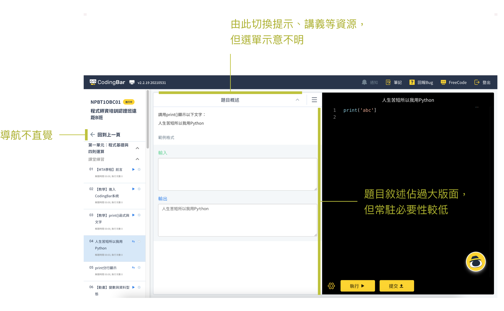
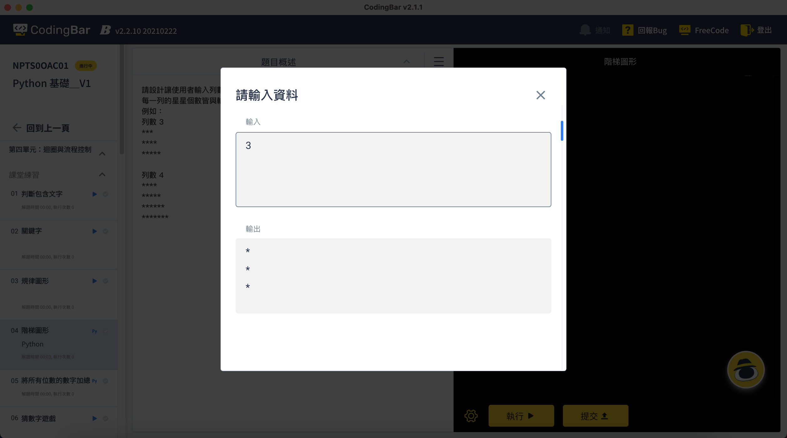
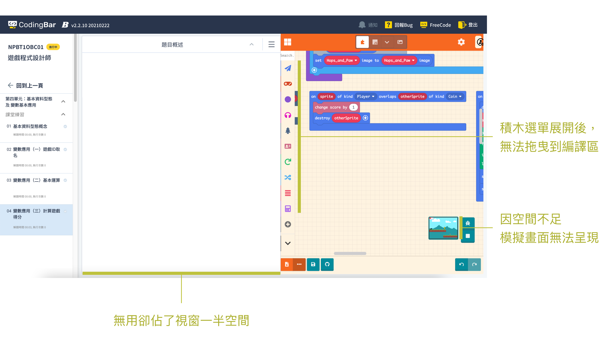

CodingBar 學生平台｜程式練習
以支援跨裝置使用為目標進行程式學習平台練習功能介面改版。
審視既有功能、學習習慣與練習需求，透過概念提案、討論、迭代修正過程，讓設計更加貼近使用者。
CodingBar 是青少年程式教育機構，提供獨家研發數位教材、智慧學習平台及派師服務。 學生程式練習平台 3.0 改版計畫以提升學習介面於各尺寸裝置上學習的兼容性為目標， 改善平台無法支援平板裝置及積木類型程式學習效率的問題。
設計能適應不同裝置並支援文字、積木兩大類程式語言的學習平台。
根據教學需求及文字型及積木程式題型，設計學生平台練習功能介面。
- UI / UX Design
- Design QA
透過相同的設計框架整合極端的需求
積木型與文字型程式有巨大差異，兩者的學習心智模型與操作方式完全不同，在企業多元服務及顧客類型條件下，需整合在同一套設計規劃中。如何設計簡單、容易操作，符合積木型學習者的心智模型，卻又能支援複雜的文字程式題型是一大挑戰。
以設計支援商業目標及資源限制
文字型程式練習透過電腦裝置較為合適，然而備電腦設備對補教業者而言成本過高，平板為多數業主可負擔的選項。如何在小裝置下降低使用障礙也是設計著墨的重點。
提升整體用戶體驗和穩定性
成功消除平台在小尺寸裝置跑版問題，功能改版上線後不再有相關 Bug 回報，大幅提升學生學習體驗。
拓展商業合作機會
設計支持積木型程式語言的學習界面更能滿足多樣化的教育需求，為平台的商業拓展打開新的可能，為中低年級安親班所採用。
為未來佈局，支持多元的教學互動
為程式編譯區預留分頁標籤空間，支援多語言、多檔案及師生協作，為 4.0 改版奠定基礎， 支持 CodingBar 「讓學程式變好玩」的重要品牌價值。
文字型程式學習者
- 頁面導航不直覺，返回課程頁需要尋找。
- AI 輔助 Agent 時常擋住視窗，造成操作困擾，很想關又不能關掉。
- 以解題的練習模式訓練邏輯思考、組織程式及應用的學習方式，大部分時間專注在程式編譯區，題目敘述在看過之後，沒有持續存在於畫面中的必要性。
- 題目選單不能關閉，佔畫面空間卻沒有太大意義。
- 解題卡關時，需要思考的引導，但不知道資源去哪裡查看。 
- 程式執行視窗為 Popup 形式，阻擋比對程式碼跟執行結果關係的可能性。 
積木型程式學習者
- 四年級以下學員不擅長使用滑鼠，但平台既有介面在平板裝置上根本無法使用。
- 主要學習模式為專案型，由講師帶領一步一步操作、介紹程式邏輯概念，並透過執行畫面立即了解程式指令創造的效果。過程中不需要題目描述區塊，更需要螢幕空間顯示專案模擬器。 
補習班業者
- 營運成本考量，備平板較桌機 / 筆電容易。但既有平台於平板裝置下幾乎無法操作。
根據需求、痛點及平台功能，在不改變流程下重新規劃介面佈局
-
極大化程式編譯區：
文字型程式碼長度較長，編譯區視窗過小讓程式碼閱讀不易；積木型程式碼更需要空間顯示與操作，極大化程式編譯區是主要考量。
-
將輔助學習資源扁平化，放入可視區：
原結構下，提示、講義等輔助資源隱藏在選單下，。將輔助資源選單拉至上層，提升學習效率與資源應用率。
-
考量平板操作，將功能選單規劃至畫面左側：
將題目選單、筆記、問答等功能以列表方式放在視窗左側，在平板裝置上可透過拇指快速操作開啟。
-
改善頁面導航：
依使用者心智，將導航位置改至頁面上方。
-
練習畫面：
預設收合題目列表，將題目選單、筆記、freecode、討論、設定、Agent等學習輔助功能集中於左側；題目輔助資源置於右側。

-
填空題：
針對學習入門者特別設計的填空題型，討論其定義與互動。概念上屬於「學習輔助資源」，但又並非純引導的提示；該放入提示中？或是加入平台既有的智慧 Agent 中，讓互動提升？

-
筆記、Freecode、討論、設定：
點擊後展開視窗，並以上下層關係進行顯示與操作。

教學者、RD 團隊意見回饋


- 建立選單層級關係： 定義左側選單為主要功能，右側則為次要選單，層級在題目之下，主要提供與題目相關的敘述、提示、講義、其他需下載的資源。調整主選單、次選單大小，建立層級關係。
-
題目選單：
主要使用時機為切換題目，設計成點擊後展開，點選題目後，自動跳至該題並關閉題目選單。
-
筆記、FreeCode、問題討論：
為符合學習情境，點擊功能選單後，此三項功能視窗將於螢幕右側開啟，讓學生能一邊參照程式碼（或學習內容）一邊做筆記 / 問問題 / 比對不同程式寫法。
-
執行結果：
當使用者點擊執行時，展開執行結果視窗並與程式碼區並列顯示，讓學生可以比對程式碼與執行解果之間的關係。
-
題目敘述、提示、解答與資源：
輔助學習資源放於右側，採 Toogle 方式，點擊可開關視窗，讓學生更能集中注意力在編譯區，同時也讓平板裝置及積木型語言練習有最大可用空間。